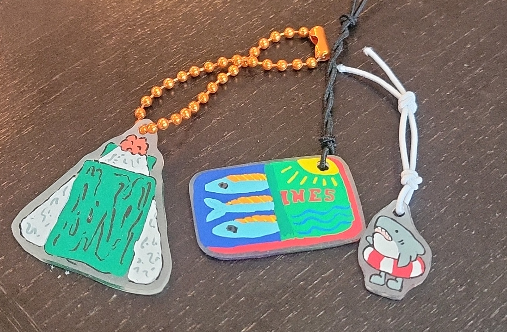

Keychains

These are a fun and easy craft to make! Acylic markers work best for this activity. These keychains are a great personalized gift for friends and family. These can be in any shape or size. Keep in mind that they do shrink upon heating, so when drawing your design, make sure to draw it larger than you might think.
Estimated time: 30 minutes to 1 hour
Materials |
Estimated Cost |
Materials I used |
| Plastic Shrink Film | $5-$10 | I ordered a pack of 15 sheets from Amazon. |
| Acrylic Markers | $15-$60 | I ordered my Markers from ENMY. They offer a wide variety of acrylic markers that work best for this craft. |
| Keychain Rings | $5-$10 | Key chain rings from Amazon. |
| Resin (optional for a glossy finish) | $10-$30 | I used clear coat nail polish to add a layer of protection and to add a glossy finish. Resign will act as a stronger protection and go on easier. *IF USING RESIGN, MAKE SURE TO HAVE PROPER SAFETY EQUIPMENT AND USE IT IN A ROOM WITH GOO VENTILATION. |
| Hole Puncher | $1.50 - $5 | A single hole puncher from the store or online. |
Instructions
Find some designs you would like to make keychains of first, and then the easiest way is to print out an image or draw it as a reference. This helps the shape stay the same and gives you a strong foundation to start your painting process. In order to have a two sided keychain, you want to start by drawing the outline of your design. From there, continue on and build up the layers of color. Below is a pictured example of my process of making a little shark keychain.


Oven shrinking process
Once you are done with your design and have cut it out and use the hole punch to wheverever you would like the chain to connect. Then preheat your oven to 320 degress Farenheight. The kind of heat shrink paper may offer various temperatures or times, so make sure to read those instructios before starting. Once the oven is preheated, place your keychain on a baking sheet and put it in the oven for 1-2 minutes. The design will start to shrink and curl up. MAKE SURE NOT TO REMOVE IT EARLY! It will flatten on its own after a few seconds. Keep the oven light on and watch the process. Once you notice your keychains are fully flattened which around the 2 minute mark, take them out of the oven. Sometimes they might have a few warps in them so you can use a flat object to press them down. Make sure to let them cool down before touching! Once they are cooled down, you can add your top layer of protection. I used clear coat nail polish, but you can also use resin for a stronger layer of protection. With that step complete, you are free to add your keychain ring, or string and attach it to your keys, backpack, or anything else you would like!
This is a video of the keychain making process.